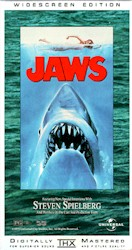

<!DOCTYPE HTML PUBLIC "-//IETF//DTD HTML//EN">
<html>

<head>
<meta http-equiv="PICS-Label" content='(PICS-1.0 "http://www.rsac.org/ratingsv01.html" l gen true comment "RSACi North America Server" by "gorringe@nitrateonline.com" for "http://www.nitrateonline.com" on "1997.01.23T01:07-0500" r (n 0 s 0 v 0 l 0))'>
<meta name="description" content="Jaws - Moonlight sparkles on the ocean. A nude swimmer plunges into the cool water, splitting the waves with a splash. She swims. She floats. She laughs. She dies.">
<meta name="GENERATOR" content="Microsoft FrontPage 4.0">
<meta name="keywords" content="store,video,vhs,dvd,laser,laser disc,pal,movie,movies,film,cinema,review,Jaws,Steven Spielberg,Roy Scheider,Richard Dreyfess,Robert Shaw,Lorraine Gray,Peter Benchley,Carl Gottlieb">
<meta name="ProgId" content="FrontPage.Editor.Document">
<title>Jaws - Nitrate Online Store</title>

<meta name="Microsoft Border" content="none, default">
</head>

<body stylesrc="../default.htm" link="#006666" vlink="#006666" alink="#FF0000">


<p align="center"><br>
<a href="../default.htm" target="_top">Contents</a> | <a href="../default.htm#FEATURES" target="_top">Features</a> | <a href="../default.htm#REVIEWS" target="_top">Reviews</a> | <a href="../default.htm#NEWS" target="_top"><font face="Times New Roman">News</font></a> | <a href="../archive.html" target="_top">Archives</a> |
<a href="../store.html" target="_top"> Store</a></p>

<hr>

<p align="center"><font size="7" face="Times New Roman"><strong>Jaws</strong></font></p>

<p align="center"><em><font face="Times New Roman"><strong><font size="4">Review by
<a href="../joe.html" target="_top">Joe Barlow</a><br>
</font><font SIZE="1">Posted 12 November 1999</font></strong></font></em></p>
<div align="center"><center>

<table border="0">
  <tr>
    <td></td>
    <td align="center"><font face="Times New Roman" size="4"><b>&nbsp;</b> </font></td>
    <td align="center">
      <p class="MsoNormal"><span style="mso-font-kerning:18.0pt"><font size="4"><b><i>Directed
      by</i> Steven Spielberg<o:p>
      </o:p>
      </b></font></span></p>
      <p class="MsoNormal"><font size="4"><span style="mso-font-kerning: 18.0pt"><b><i>Starring</i>
      <span style="mso-font-kerning:18.0pt">Roy Scheider,&nbsp;<br>
      Richard Dreyfess, Robert Shaw,&nbsp;<br>
      <i>and </i>Lorraine Gray<o:p>
      </o:p>
      </span></b></span></font></p>
      <p class="MsoNormal"><font size="4"><span style="mso-font-kerning: 18.0pt"><b><i>Written
      by</i> <span style="mso-font-kerning:18.0pt">Peter Benchley&nbsp;<i><br>
      and</i> Carl Gottlieb<o:p>
      </o:p>
      </span></b></span></font></td>
  </tr>
</table>
</center></div>
<blockquote>
  <p><b><span style="font-size:13.5pt;mso-font-kerning:18.0pt">&quot;You yell
  'Barracuda!' and everyone says, 'Huh? What?'; You yell 'Shark!' and we've got
  a panic on our hands on the Fourth of July.&quot;<br>
  &nbsp;&nbsp;&nbsp; --Larry Vaughn, Mayor of Amity, <i>Jaws</i> <o:p>
  </o:p>
  </span></b></p>
</blockquote>
<p><span style="mso-font-kerning:18.0pt">In 1975, a young director named Steven
Spielberg single-handedly created a new movie genre--the summer blockbuster. The
twenty-five year-old moviemaker's third film, <i>Jaws</i>, shook the industry
with such force that its effects are still being felt today. It forever
shattered Hollywood's belief that people don't watch movies during the summer;
for this reason alone, every action extravaganza that followed it, from <i>Star
Wars</i> to <i>Independence Day</i> to Spielberg's own <i>Jurassic Park</i> and <i>The
Lost World</i>, owes a debt of gratitude to this tale of terror. <i>Jaws</i>
continues to serve as a benchmark of suspense cinema, and still retains its
visceral power nearly a quarter-century after its initial release. <o:p>
</o:p>
</span></p>
<p><span style="mso-font-kerning:18.0pt">Moonlight sparkles on the ocean. A nude
swimmer plunges into the cool water, splitting the waves with a splash. She
swims. She floats. She laughs. <o:p>
</o:p>
</span></p>
<p><span style="mso-font-kerning:18.0pt">She dies. <o:p>
</o:p>
</span></p>
<p><span style="mso-font-kerning:18.0pt">Martin Brody (Roy Schieder), the chief
of police in the idyllic seaside town of Amity, is quick to react to the news of
the shark attack. He sensibly believes the beaches should be closed until the
leviathan can be vanquished. The townsfolk, however, are less certain: Amity is
a summer town which depends on tourist dollars for its survival. Every day the
beaches are closed, the town grows poorer; although Brody believes that safety
is the more important concern, he is overruled by Mayor Vaughn (Murray
Hamilton). Soon the beaches are open once again... with disastrous results. <o:p>
</o:p>
</span></p>
<p><span style="mso-font-kerning:18.0pt">Brody calls for help from the
Oceanographic Institute, and a young shark expert named Matt Hooper (Richard
Dreyfuss) is sent to assist. The duo teams up with a crusty local salt named
Quint (Robert Shaw), who offers to kill the shark--for a fee, of course. <o:p>
</o:p>
</span></p>
<p><span style="mso-font-kerning:18.0pt">The story at the heart of Steven
Spielberg's <i>Jaws</i> revolves not so much around the creature which has taken
up residence in the waters of Amity, but around the townsfolk who are forced to
deal with the consequences of its presence. It's a subtle distinction, but it
makes all the difference. <i>Jaws</i> is not a monster flick; it's the story of
three men facing a seemingly insurmountable force of nature. In keeping the
emphasis on the characters rather than the shark, as the film's three wretched
sequels did, Spielberg crafted a cinematic work that still fascinates and
mesmerizes. Human moments dominate the tale--take a look at the oft-parodied
&quot;injury comparison&quot; scene aboard Quint's boat, the Ocra, and tell me
whether you saw anything so clever or affecting in, say, <i>Independence Day</i>.
<o:p>
</o:p>
</span></p>
<p><span style="mso-font-kerning:18.0pt">But why has <i>Jaws</i> become a
cultural icon? No one expected the phenomenal success of the film (it was the
highest-grossing movie of all time until George Lucas unveiled <i>Star Wars</i>
on an unsuspecting world two years later. Spielberg would later reclaim the
title with 1983's <i>E.T.</i>, though a certain James Cameron movie about a
really big boat now holds the title), least of all Spielberg himself. Nor was
any indication of <i>Jaws</i>' destiny evident during its calamitous shoot,
which ran months behind schedule and millions of dollars over budget. The
mechanical shark didn't work correctly on the best of days, and didn't work at
all on the worst, sometimes sinking to the bottom of the ocean in mid-shot for
no discernible reason. <o:p>
</o:p>
</span></p>
<p><span style="mso-font-kerning:18.0pt">These problems would've destroyed any
other movie; they made <i>Jaws</i> into a legend. <o:p>
</o:p>
</span></p>
<p><span style="mso-font-kerning:18.0pt">Unable to use the mechanical shark for
many of his desired shots, Spielberg hit upon a new strategy: keeping the
creature off screen for as much of the film as possible, thus allowing the
audience's imagination to provide the visuals and heightening the suspense when
the shark does appear. Spielberg teases and taunts the audience with tiny
glimpses of the shark--a fin here and there--so effectively that when the Great
White makes its first &quot;real&quot; onscreen appearance (nearly ninety
minutes into the film, as Brody shovels bait into the ocean), the audience jumps
as one. Hitchcock would be proud. <o:p>
</o:p>
</span></p>
<p><span style="mso-font-kerning:18.0pt">One of the tale's most interesting
facets is the lack of a central villain; Mayor Vaughn is simply doing what he
believes to be in his town's best interest. His actions are justifiable and
understandable, even if the consequences are just as clearly disastrous. And
though Quint comes off as eccentric and perhaps even a bit dangerous, his
personality is amply developed and rounded along the way, as evidenced in
Quint's mesmerizing 'Indianapolis' speech (written by Shaw himself), one of
cinema's most haunting. In lesser hands, both Vaughn and Quint could have become
cardboard stereotypes; under Spielberg's eye, they're as real as you or me. <o:p>
</o:p>
</span></p>
<p><span style="mso-font-kerning:18.0pt">No overview of <i>Jaws</i> would be
complete without mention of John Williams' score. Williams, who would later
compose the now-legendary music for <i>Star Wars</i>, <i>Raiders of the Lost Ark</i>,
<i>Close Encounters of the Third Kind</i>, and many other cinema milestones,
hits exactly the right tone in <i>Jaws</i>-- themes from the music echo the
themes of the film. The score stalks the listener, exploding from whisper to
crescendo with no warning; in some ways, the music itself is akin to a shark
attack. Spielberg himself has claimed that without Williams' elegant score, <i>Jaws</i>
wouldn't be nearly as good. I tend to agree. <o:p>
</o:p>
</span></p>
<span style="font-size:12.0pt;font-family:&quot;Times New Roman&quot;;mso-fareast-font-family:
&quot;Times New Roman&quot;;color:black;mso-font-kerning:18.0pt;mso-ansi-language:EN-US;
mso-fareast-language:EN-US;mso-bidi-language:AR-SA">I don't like all of
Spielberg's films, but I cannot begrudge him <i>Jaws</i>, which is still,
twenty-five years later, arguably the finest thriller ever made. Everything
clicks--the performances, the filmmaking technique, the music. <i>Jaws</i> is
not merely the most significant 'monster movie' since <i>Godzilla</i>; it's one
of American cinema's crowning achievements. May it continue scaring audiences
out of the water for decades to come.</span>

<hr size="4" width="60">

<i>

<p align="center"><a href="/storeitm/storeitm.asp?qt=Jaws/Jaws" target="_top"></a><br>
<a href="/storeitm/storeitm.asp?qt=Jaws/Jaws" target="_top"><small><em>Buy It!</em></small></a></p>

</i>

<hr>
<!--webbot bot="Include" U-Include="../_private/storesrch.html" TAG="BODY" startspan --><strong>[Shared Documents/General/Website/_private/storesrch.html]</strong><!--webbot bot="Include" endspan i-checksum="33770" -->

<i>

<hr>

</i>

<p align="center"><a href="../default.htm" target="_top">Contents</a> | <a href="../default.htm#FEATURES" target="_top">Features</a> | <a href="../default.htm#REVIEWS" target="_top">Reviews</a>
| <a href="../default.htm#NEWS" target="_top"><font face="Times New Roman">News</font></a> | <a href="../archive.html" target="_top">Archives</a> | Store<br>

<i>

<em><font size="1">Copyright © 1999 by Nitrate Productions, Inc. All Rights Reserved.</font> </em></p>

<p>&nbsp;</i>


</body>
</html>
